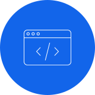
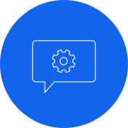

KI-gestützte Entwicklung · Security Engineering · NIS2 & CRA
Mit KI produktiver entwickeln.
Software sicher betreiben.
Wir entwickeln Software mit KI – produktiv und kontrolliert, bewerten bestehende Anwendungen und Architekturen und etablieren belastbare Security-, NIS2- und CRA-Prozesse.
KI kann Softwareentwicklung, Qualitätssicherung und Geschäftsprozesse erheblich verbessern – wenn sie kontrolliert in reale Systeme integriert wird. Wir setzen KI bereits produktiv ein und verbinden ihre Geschwindigkeit mit klarer Architektur, automatisierten Tests, Security Reviews und menschlicher Verantwortung.
Diese Erfahrung machen wir für andere Unternehmen kaufbar. Wir übernehmen KI-gestützte Softwareentwicklung, analysieren bestehende Software und externe Architekturen und begleiten die technische Umsetzung von Security-, NIS2- und CRA-Anforderungen – vom ersten Befund bis zum laufenden Prozess.
Warum Seleos
Mehr Engineering, weniger Koordination.
Sie arbeiten direkt mit zwei erfahrenen Entwicklern, die KI-Werkzeuge gezielt für Analyse, Umsetzung, Tests, Reviews und Dokumentation einsetzen. So fließt mehr Zeit in die Lösung und weniger in Übergaben, Abstimmungsschleifen und Projekt-Overhead.
Direkte Verantwortung
Die Entwickler, die Ihr Vorhaben analysieren und die Architektur bewerten, setzen die Lösung auch um. Sie erhalten klare Ansprechpartner ohne lange Übergabeketten zwischen Vertrieb, Projektleitung und Technik.
KI als Produktivitätshebel
Spezialisierte KI-Werkzeuge unterstützen uns bei klar abgegrenzten Entwicklungs-, Analyse-, Test- und Review-Aufgaben. Fachliche Entscheidungen, Security-Bewertung und Freigabe bleiben bei uns.
Qualität mit System
Verbindliche Architekturregeln, automatisierte Tests, Security-Gates und nachvollziehbare Reviews machen KI-gestützte Entwicklung kontrollierbar. Geschwindigkeit entsteht innerhalb klarer technischer Leitplanken.
Leistungen
Entwickeln, bewerten, absichern und betreiben
Wir begleiten Software über den gesamten technischen Verbesserungszyklus: von produktiver KI-gestützter Entwicklung über unabhängige Architektur- und Security-Bewertung bis zu belastbaren Prozessen und laufender Betreuung.

KI-gestützte Entwicklung
Wir entwickeln produktive Software mit KI-Werkzeugen – schneller, kontrollierbar und mit klarer menschlicher Verantwortung.
- Neue Funktionen und Systeme
- Modernisierung und Integration
- Automatisierte Qualitätssicherung
- Security und produktiver Betrieb

Software & Architektur
Wir bewerten bestehende und extern entwickelte Systeme unabhängig hinsichtlich Qualität, Wartbarkeit, Datenflüssen, Betrieb, KI-Einsatz und Risiken.
- Architektur, Code und APIs
- Technische Schulden
- Tests und Qualitätssicherung
- Priorisierter Maßnahmenplan
Security & Pentests
Wir prüfen autorisierte Webanwendungen, APIs, Cloud-nahe Architekturen und KI-Systeme auf konkrete Risiken – nachvollziehbar und umsetzungsorientiert.
- Threat Modeling
- Security Reviews
- Penetrationstests
- Behebung und Retest
NIS2 & CRA
Wir übersetzen regulatorische Anforderungen in technische Prozesse, Kontrollen und Nachweise und begleiten Einführung, Umsetzung und laufende Pflege.
- Risiko- und Gap-Analyse
- Secure Development und SBOM
- Incident- und Meldeprozesse
- Evidence und Betreuung
Vorgehen
Vom Problem zur überprüfbaren Verbesserung
Verstehen
Wir klären Ziel, Systemkontext, Datenflüsse und geschäftliche Auswirkungen.
Bewerten
Wir analysieren Architektur, Code, Prozesse und Risiken und priorisieren die Befunde.
Umsetzen
Wir entwickeln Funktionen, beheben Schwächen und etablieren belastbare Prozesse.
Prüfen
Tests, Security-Prüfungen, Reviews und Retests zeigen, ob die Maßnahmen greifen.
Betreiben
Wir dokumentieren Ergebnisse und begleiten Qualität, Security und Compliance weiter.
Einfach starten
Klar abgegrenzte Assessments mit verwertbarem Ergebnis
Ein erstes Projekt braucht keinen monatelangen Beratungsprozess. Wir starten mit einem klaren Ziel und liefern eine belastbare Entscheidungs- und Umsetzungsgrundlage.
KI-gestütztes Engineering Assessment
Für neue Software, Weiterentwicklung oder Modernisierung mit höherer Produktivität und kontrollierbarer Qualität.
Ergebnis: Ausgangslage, Zielarchitektur, Qualitätskriterien, geeignete KI-gestützte Arbeitsweise und Umsetzungsplan.
Software & Architecture Assessment
Für eine unabhängige Bewertung bestehender, übernommener oder extern entwickelter Software.
Ergebnis: Architektur- und Risikobewertung sowie Maßnahmenplan mit Aufwand und Wirkung.
Security Assessment
Für Webanwendungen, APIs oder KI-Systeme vor Release, Kundenprüfung oder Weiterentwicklung.
Ergebnis: reproduzierbare Befunde, Risikoeinordnung, Behebungsempfehlungen und optionaler Retest.
NIS2/CRA Readiness & Action Plan
Für die Überführung regulatorischer Anforderungen in konkrete Prozesse und Maßnahmen.
Ergebnis: Gap- und Risikoanalyse, Maßnahmenregister, Prozess- und Evidenzplan.
Kontinuierliche Zusammenarbeit
Security und Compliance sind kein Einmalprojekt
Software, Abhängigkeiten, Bedrohungen und regulatorische Anforderungen verändern sich. Deshalb begleiten wir Unternehmen nach Assessment und Umsetzung auch langfristig – mit definierter Kapazität und klarer Verantwortung.
- regelmäßige Architektur-, Risiko- und Maßnahmenreviews
- Pflege technischer NIS2-/CRA-Prozesse und Evidenzen
- Schwachstellen-, Dependency- und SBOM-Reviews
- Remediation, Security Updates und Prozessübungen
- Weiterentwicklung KI-gestützter Engineering- und Qualitätsprozesse
Weitere Engineering-Leistungen
Bewährte Software- und Cloud-Kompetenz
Unsere neue Ausrichtung baut auf langjähriger Erfahrung in Software-, Web-, PHP-, Cloud- und Integrationsprojekten auf. Diese Leistungen bleiben verfügbar und ergänzen unsere Arbeit an KI-, Security- und Compliance-Vorhaben.
Team
Zwei erfahrene Entwickler. Direkte Zusammenarbeit.
Seleos ist ein eingespieltes Senior-Engineering-Team aus Berlin. Wir verbinden langjährige Softwareentwicklung mit produktivem KI-Einsatz, Security Engineering und technischer Compliance-Umsetzung.

Geschäftsführer mit Schwerpunkten in Softwarearchitektur, KI-gestütztem Engineering, Security und technischer Compliance-Umsetzung.
Nachweisbare Erfahrung
KI-gestützte Entwicklung mit kontrollierbarer Qualität
Für ein umfangreiches produktives Softwaresystem setzen wir KI-Werkzeuge über den gesamten Engineering-Zyklus ein – von Analyse und Implementierung bis zu Tests, Reviews und Dokumentation.
Diese praktische Erfahrung übertragen wir auf Kundenprojekte: mit klaren Architekturregeln, automatisierter Qualitätssicherung, integrierten Security-Prüfungen und nachvollziehbaren Freigaben.
Häufige Fragen
Was Sie vor dem ersten Gespräch wissen sollten
Kontakt
Welches Problem sollen wir für Sie lösen?
Sie möchten KI produktiv einsetzen, eine Software oder Architektur unabhängig bewerten lassen oder NIS2-/CRA-Anforderungen technisch umsetzen? Beschreiben Sie uns kurz Ihre Ausgangslage. Wir sagen Ihnen offen, ob und wie wir sinnvoll unterstützen können.
Vertrauliche Erstbewertung · Direkter Kontakt zu den Entwicklern · Klare Empfehlung für den nächsten sinnvollen Schritt